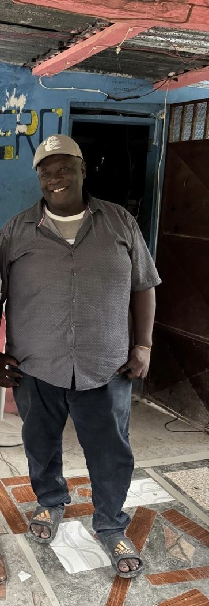

Solidarité et développement durable à Puits-Laurant

Qui sommes-nous ?
L’Association Paysans Puits-Laurant (A.P.P.L.) a été constituée en 1998 et a reçu une autorisation de fonctionnement de la mairie d’Aquin en 2006. L’association travaille à sa relance et à l’actualisation de ses démarches administratives.
Notre ambition : unir les habitants, les bénévoles et la diaspora autour de projets concrets de développement rural et de solidarité.
Nos projets
Demander une aide
Vous ou un proche avez besoin de nourriture, de vêtements, de matériel de mobilité ou d’un accompagnement ? Contactez l’association pour connaître les dispositifs disponibles.
Pour protéger les personnes vulnérables, aucun dossier médical ni donnée personnelle sensible n’est recueilli sur ce site public.
Contacter l’associationTypes d’aide envisagés
♿ Matériel d’assistance
🍲 Aide alimentaire
🧑🦳 Accompagnement des aînés
📚 Fournitures scolaires
🩺 Orientation vers les soins
Faire un don
Soutenez les actions de l’A.P.P.L. par des dons de denrées, de matériel ou par un partenariat. Les contributions financières en ligne seront ouvertes uniquement après la mise en place d’une solution de paiement vérifiée.
Proposer un donActualités
Galerie
Les images de bénéficiaires, en particulier les mineurs, ne sont publiées qu’après obtention des autorisations nécessaires.
Vidéos transmises — publication après vérification des autorisations
Les fichiers vidéo sont inclus dans le dossier videos/, mais leur diffusion publique est désactivée par défaut.
Devenir partenaire
Associations, institutions, entreprises et membres de la diaspora : contribuons ensemble à des projets transparents et utiles pour les communautés rurales.
Nous contacterContact
Les coordonnées officielles seront publiées après validation.